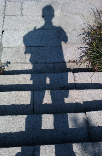

<link href='http://fonts.googleapis.com/css?family=Reenie+Beanie' rel='stylesheet' type='text/css'>
<section id="about">
  <div id="mugshot">
    
  </div>
  <p>
    博主毕业于<em>老和山职业技术学院电脑维修专业</em>。平时热爱<em>篮球</em>，喜好<em>旅游</em>，经常和兄弟们<em>打升级</em>，偶尔<em>打台球</em>，<em>骑自行车</em>，最近正在<em>学钢琴</em>，有意向文艺青年靠拢。
  <br/>
  博主会记录一些感兴趣的技术和知识，为保证浏览质量，请使用<a href="http://www.google.com/chrome">Chrome</a>浏览器。
  </p>
</section>
<section id="writings">
  {% for category in site.categories %}
    <p class="category">{{ category[0] | capitalize }} ({{ category | last | size }})</p>
    <ul>
    {% for post in site.posts %}
      {% if post.categories[0] == category[0] %}
        <li class="post">
          <p>{{ post.date | date: "%m-%d-%Y" }}</p>
          <h3><a href="{{ post.url }}">{{ post.title }}</a></h3>
        </li>
      {% endif %}
    {% endfor %}
    </ul>
  {% endfor %}
</section>
<footer>
  <p>Copyright 2012 yapianyu</p>
</footer>
